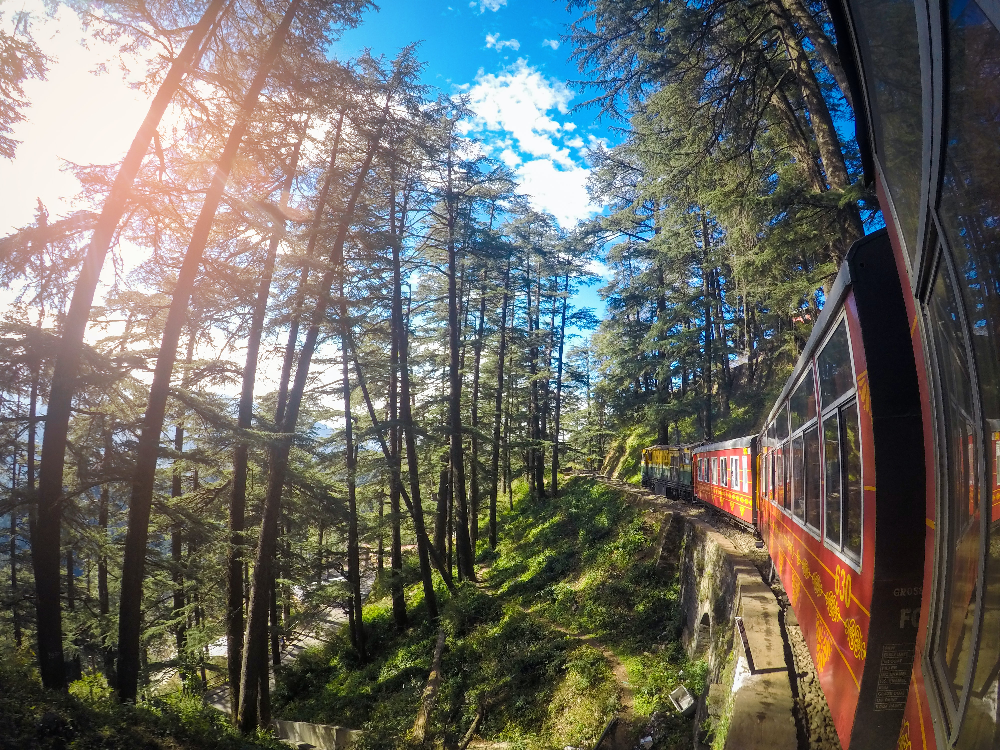

Manali
- Nearest airport:
At Bhuntar (50 km)
- Must visit places:
Hidimba Devi Temple, Bhrigu Lake, Pin Valley National Park, Manali Sanctuary, Vashishth Temple, Jogni Falls etc.
- Activities to do:
Paragliding at Rohtang Pass, camping and winter sports at Solang Valley, river rafting at Pandoh Dam
- Known for:
One of the best Hill Stations in North India, Manali has an unassailable reputation for being a backpacker’s paradise at a truly romantic destination.
Gulmarg
- Nearest airport:
At Srinagar (56 km)
- Must visit places:
Khilanmarg, Alpather Lake, Gulmarg Gondola, Gulmarg Biosphere Reserve, Seven Springs, Maharani Temple etc.
- Activities to do:
Skiing at Gulmarg Backcountry Ski Lounge, snowboarding at Apharwat Peak, camping at Ningle Nallah etc.
- Known for:
Gulmarg is a heavely region in Baramula district of the country which is most known for being a skiing hub of the state.

Munnar
- Nearest Airport:
Cochin
- Must Visit Places:
Tea gardens along Kolukkumalai Hills, Echo Point, Attukal Waterfalls, Top Station, Kundala Lake, Tata Tea Museum, Matupetty Dam etc.
- Activities to Do:
Birdwatching at Thekkady Bird Sanctuary, wildlife spotting at Eravikulam National Park, enjoy mountain biking at Anamudi Shola or Vandanmedu areas, have a picnic at Lakkam Waterfalls, rock climbing, rappelling etc.
- Known for:
Tea and spice plantations

Coorg
- Nearest Airport:
Mysore
- Must Visit Places:
Namdroling Monastery or Golden Temple, Abbey Falls, Raja’s Seat, Iruppu Falls, Nagarahole Wild Life Sanctuary, Madikeri, Talakaveri etc.
- Activities to Do:
Have fun bathing elephants at Dubare Elephant Camp, trek through Tadiandamol, Mullayanagiri, Kodachadri or Brahmagiri, enjoy a hearty meal of Coorg special Pandi Curry with Akki Roti, take a relaxing walk through a coffee plantation, and enjoy activities like camping, fishing and river rafting etc.
- Known for:
Coffee plantations and misty mountains

Shimla
- Nearest airport:
At Chandigarh (113 km)
- Must visit places:
Jakhoo temple, Kalka-Shimla railway, Rashtrpati Niwas, The Ridge, Himachal State Museum, Christ Church etc.
- Activities to do:
Shopping at Mall road, hot pool bath and river rafting at Tattapani, paragliding, camping, heli-skiing at Narkanda and Kufri etc.
- Known for:
This popular Hill Station in North India is best known for its amazing toy train, running between Kalka and Shimla and its many handicrafts markets.

Mussoorie
- Nearest airport:
At Dehradun (54 km)
- Must visit places:
Kempty Falls, Mussoorie Lake, K Dev Bhoomi Wax Museum, Christ Church, Bhadraj Temple, Fish Aquarium etc.
- Activities to do:
Ziplining and other adventure sports at Adventure Park Mussoorie, boating and amusement rides at Company Bagh etc.
- Known for:
Mussoorie is a famous weekend getaway destinations from New Delhi, known for interesting attractions like The Cloud’s End and The Mall.